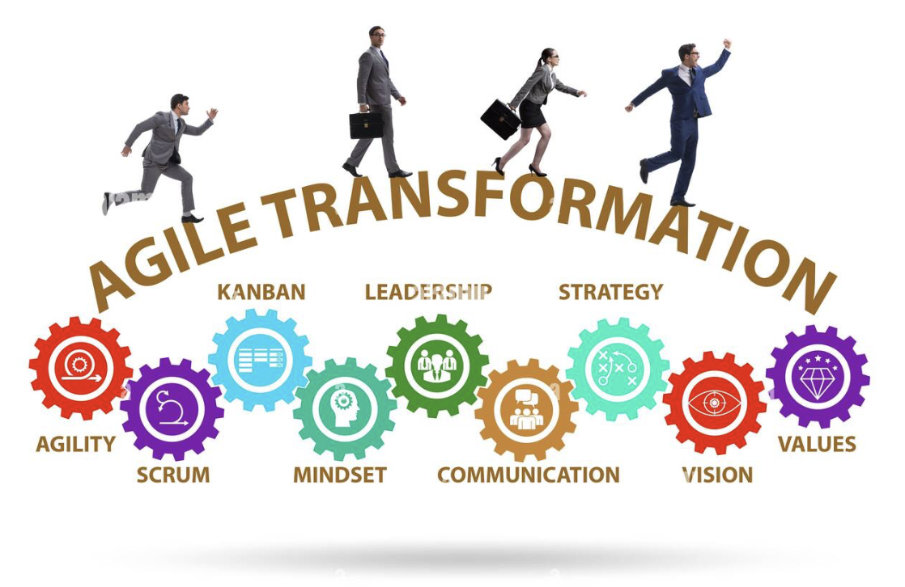
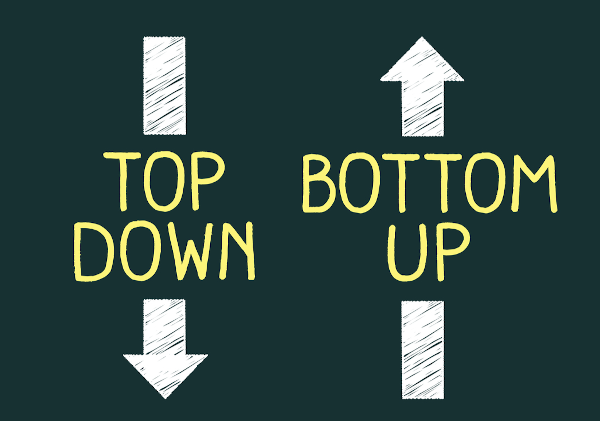
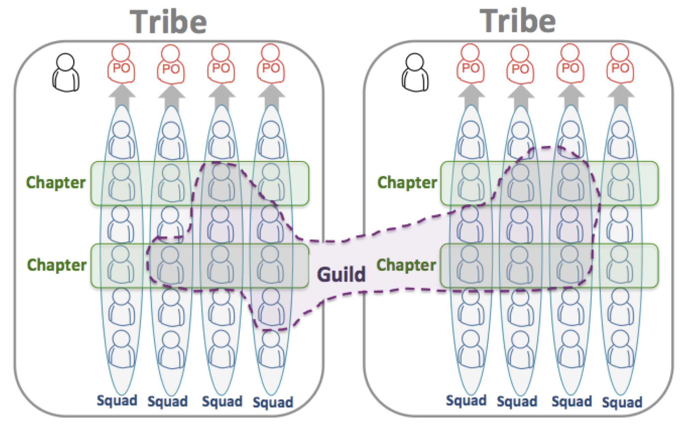
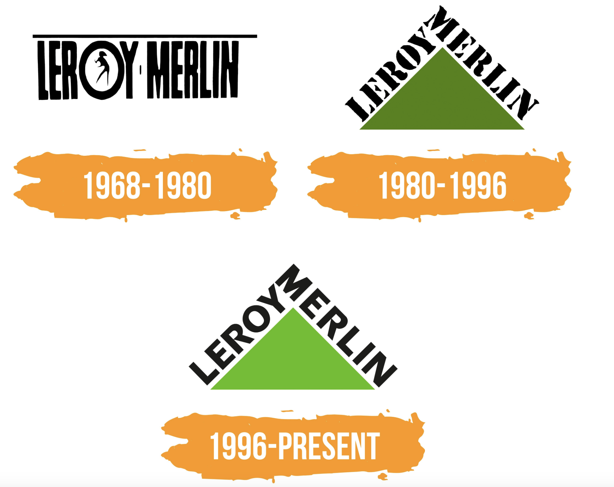
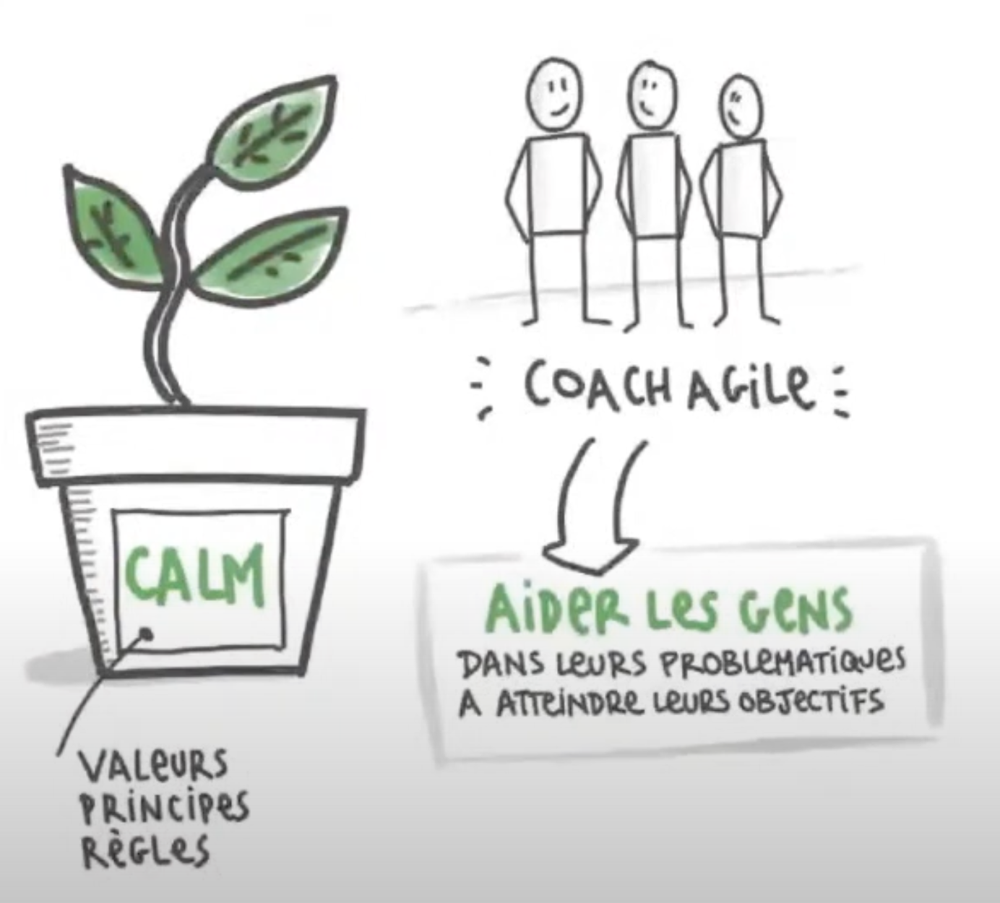
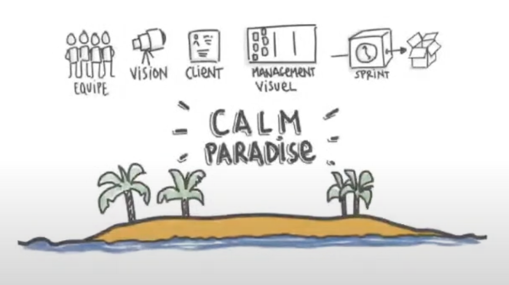
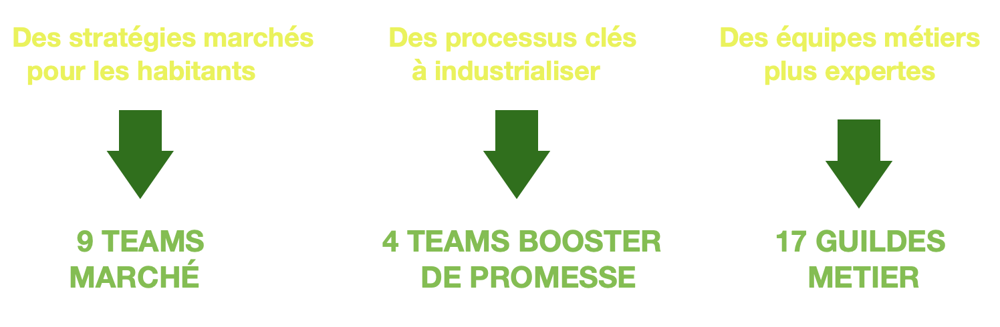

Etude de cas : Transformation agile d’entreprises
- POK
- 2024-2025
- temps 1
- Agile
- Etude de cas
- Juliette Kocupyr
Ce POK traite des transformations agiles en entreprise, avec l'étude de deux grands groupes devenus des modèles de l'agile.
Connaître les bases de la méthode Agile
Ce POK se composera d'une partie théorique sur le processus de transformation agile d'une entreprise, complétée par l'étude de deux grands groupes français et international devenus agiles.
- Niveau : Débutant
- Prérequis : Avoir des connaissances sur les méthodes agiles et les transformations d'entreprises
- Mon MON 1.1 permet d'appréhender le processus de transformation d'une entreprise pour mieux comprendre les besoins de la trasformation agile.
Objectifs
L'objectif de ce POK est de comprendre le processus de transformation agile d'une entreprise, les raisons de cette transformation et l'impact résultant de celle-ci. À travers les études de cas, je veux montrer que les méthodes agiles ne sont pas réservées qu'à un unique projet ou qu'aux petites entreprises. Mais également que la transformation agile n'est pas une baguette magique, qu'elle s'accompagne d'un lot de défis à surmonter et ne convient pas à toutes les entreprises.
Sprint 1
- [x] Définir le processus des transformations agiles
- [x] Compréhension des enjeux d'une telle transformation
- [x] Rédaction de la partie théorique et bibliographie
- [x] Étude de cas : Spotify, un modèle de l'agile à grande échelle
Sprint 2
- [x] Étude de cas : LeroyMerlin, un géant en mode agile
- [x] Rédaction des études de cas
- [x] Analyse et comparaison des études de cas
- [x] Rédaction finale et mise en ligne
Horodatage
| Date | Heures passées | Indications |
|---|---|---|
| Vendredi 13/09 | 2H | Recherche sur les transformations agiles |
| Samedi 14/09 | 2H | Analyse et compterendu des recherches |
| Lundi 16/09 | 3H | Etude de la transformation et du modèle de spotify |
| Lundi 16/09 | 3H | Analyse et rédaction du modèle |
| Mercredi 02/10 | 2H | Etude de la transformation structurelle de Leroy Merlin |
| Lundi 03/10 | 2H | Etude du plan de transformation du CALM |
| Lundi 04/10 | 3H | Analyse du modèle |
| Lundi 10/10 | 3H | Rédaction, conclusion, mise en forme |
Sommaire
Introduction
S’adapter ou disparaître. C'est la contrainte majeure qu'ont subit une majorité d'entreprise suite à la crise du Covid-19, les obligeant à prendre des décisions rapidement avec très peu de visibilité. Et sans leurs repères habituels, que ce soit dans leur mode de fonctionnement (passage en télétravail…), dans les conditions d’exercice de leur métier (fermeture des commerces, mesures sanitaires…) ou encore dans le comportement de leurs clients (digital, nouvelles priorités…).
De plus aujourd'hui, les clients sont de plus en plus exigeants, les technologies évoluent rapidement et la concurrence est de plus en plus féroce. Les entreprises qui ne peuvent pas s’adapter rapidement risquent d’être laissées pour compte.
Dans ce contexte, l’agilité est devenue un facteur clé pour les entreprises qui cherchent à s’adapter aux changements rapidement. Accélération du time-to-market, meilleure flexibilité, plus de valeur pour le client, regain de motivation au sein des équipes : l’agilité fait rêver les organisations du secteur privé comme public.
Mais pour envisager un tel changement, il faut déjà comprendre les notions de transformation agile.
Principes de l'agile 🤸🏻
L’agilité c’est la capacité d’une organisation à créer de la valeur et à satisfaire continuellement le client final, tout en s’adaptant aux changements de son environnement. Cela impose de repenser les organisations traditionnelles de l’entreprise.
La notion d'agilité est née dans les années 90, au sein des DSI (Directions des Systèmes d'Information). Elle s'illustre par les valeurs affichées dans le Manifeste pour le développement Agile de logiciels, que l'on peut reformuler de la manière suivante :
- Avoir un cadre de travail ouvert, propice à l'excellence.
- Chercher la finalité des travaux menés et la qualité des éléments livrés.
- Entretenir une collaboration harmonieuse avec les clients.
- Accepter les changements et la mise en place d’une organisation apprenante.
Aujourd'hui, les principes de l’agilité tendent à dépasser le seul cadre des projets SI dans l’objectif de diffuser cette culture dans toute l’organisation et se généraliser dans des directions variées au profit de l’innovation.
La transformation agile 🔄
Définition
La transformation Agile est le processus qui consiste à transformer la structure, la stratégie, le personnel, les processus et la technologie d'une organisation sur la base des principes de l'entreprise Agile. Elle concerne les petites, moyennes et grandes organisations ayant pour projet de déployer l’agilité à l’ensemble de leur structure : ainsi, toutes les couches de l’organisation sont visées, qu’elles soient stratégiques, managériales ou opérationnelles. Cette transformation est un processus à moyen / long terme qui pousse forcément à remettre en cause certains fondements de base de l’entreprise.
Mais comprendre ce qu'est la transformation Agile nécessite déjà de bien appréhender ce qu'elle n'est pas : la simple mise en pratique des méthodes de développement logiciel Agile à l'échelle de l'entreprise. Si la plupart des organisations commencent leur parcours Agile en adoptant des pratiques de développement logiciel Agile, la transformation Agile ne se limite pas à changer la façon dont les logiciels sont conçus, ni à mettre en place de nouvelles méthodologies et outils de travail.
Devenir une entreprise agile implique une transformation culturelle profonde, cela implique un vrai investissement dans le temps, de nouvelles méthodes et de la ténacité car les obstacles seront forcément présents. La première étape du changement transformation agile d’une organisation nécessite donc de faire évoluer la culture de tous les collaborateurs. Car une l’entreprise agile représente en premier lieu un ensemble de valeurs, une façon d’être, un état d’esprit au quotidien. Il est important d’avoir conscience des changements de culture que cela demande et accepter qu’il s’agisse d’une démarche d’évolution continue.
L’Agile, c’est 70 % de culture et 30 % d’outils.
Toute la complexité de la transformation agile consiste alors à réussir à atteindre ce difficile équilibre entre respect d’un cadre méthodologique et prise en compte des spécificités culturelles. De plus chaque transformation agile est unique, avec les enjeux business propres à l’entreprise, bien qu'elles reposent sur des principes communs.
En fonction des contextes, différents modes d’organisations peuvent être expérimentés:
- l’agilité à l’échelle et le fonctionnement en squads/tribus dans les DSI ou au sein d’autres directions, autrement dit adapter les principes de l'agile à grande échelle (l'exemple le plus connu est l'entreprise Spotify)
- l’entreprise libérée ou holacratie, qui se concentre sur le processus de prise de decision
- la sociocratie pour les organisations responsabilisantes
Ces modèles sont choisis en fonction de leur cohérence avec l’ADN de l’entreprise voulant opérer ce changement.
Concrètement, la transformation agile c'est passer d’une organisation hiérarchique, avec un mode de management descendant et des équipes cloisonnées, à une organisation organique caractérisée par un management qui porte et transmet la vision. Cette organisation repose sur des équipes multi-compétences, construites autour d’objectifs communs, dont les rôles sont clairement définis, et qui opèrent selon des approches de bout-en-bout. Elle favorise la capacité à travailler avec un écosystème qui s’adapte aux changements, l’amélioration continue ainsi que les liens forts avec le client pour une meilleure compréhension et prise en compte de ses attentes.
La mise en œuvre de ces nouveaux types d’organisation s’appuie sur plusieurs piliers qui sont la collaboration, la créativité, la responsabilisation des équipes, la motivation, une vision clairement définie et la confiance.
C'est donc une transformation organisationnelle et managériale qui va impacter l’ensemble de l’organisation et ses modes de fonctionnement comme les ressources humaines, la gouvernance et les processus, les indicateurs et outils et l’écosystème.
Les déclencheurs
Deux principaux éléments déclencheurs sont à l'origine de la transformation agile : le contexte économique de l’entreprise et son besoin d’innovation. Dans 51 % des cas c'est le besoin d'innovation qui pousse les entreprises à devenir agile et dans 35 % des cas c'est l'environnement économique. Les 14 % restant prennent en compte d'autres raisons qui peuvent être l’arrivée dans l’entreprise d’un nouveau manager ou les attentes des métiers de s’affranchir des contingences des projets traditionnels par exemple.
Les facteurs déclencheurs déterminent deux approches de la transformation agile, Bottom-up ou Top-down. L'approche Bottom-up vient de l'exigence d’innovation qui crée le besoin d’agilité au niveau des acteurs locaux et le lancement d’initiatives. Alors que le Top-down vient du constat d’inadéquation entre les besoins de l’organisation dans un contexte concurrentiel et les méthodes usuelles et classiques.
Étapes clés
-
Avant d’entamer toute démarche de transformation agile, la première étape primodrial est l’évaluation de l’agilité actuelle de l'entreprise. Cela nécessite une analyse approfondie de divers aspects de l'organisation qui sont:
- L'agilité organisationnelle, qui se rapporte à la structure et à la hiérarchie de votre entreprise.
- L’agilité opérationnelle, qui concerne la manière dont les tâches et les projets sont gérés au quotidien.
- L’agilité stratégique, qui se penche sur la capacité de l’entreprise à s’adapter aux changements du marché.
- L’agilité culturelle, qui évalue la réceptivité et la flexibilité des employés face au changement.
En identifiant clairement les forces et les faiblesses dans ces domaines, il est possible de cibler précisément les domaines d’amélioration prioritaires dans la transformation agile.
-
Il faut ensuite définir une vision et des objectifs clairs. Ça doit être une représentation claire et inspirante de ce que l'entreprise souhaite atteindre à travers l’adoption des pratiques agiles. Les objectifs, eux, doivent être formulés selon la méthode SMART (Spécifiques, Mesurables, Atteignables, Réalistes et Temporellement définis). Ils fourniront un cadre clair pour mesurer les progrès et les réussites tout au long du projet.
Il faut ensuite communiquer efficacement cela, à l’ensemble de l’équipe. Cela va garantir que tout le monde est sur la même longueur d’onde, mais également favoriser l’adhésion et l’engagement de tous les membres, assurant ainsi le succès de la transformation.
-
Une équipe de pilotage déjà en place peut ensuite s'attaquer à la planification et la priorisation des initiatives agiles. Ces initiatives sont les actions concrètes qui guideront le changement vers une organisation plus agile. Chaque initiative doit être soigneusement identifiée en fonction de son importance pour atteindre les objectifs de transformation et nécessite une priorisation basée sur leur impact potentiel et leur faisabilité.
-
Vient ensuite la capacité à mesurer et suivre les progrès qui est primordiale dans ce processus. L’équipe, au coeur de cette transformation, doit avoir une vision claire de l’avancement du projet. Pour cela, la gestion des indicateurs clés de performance (KPI) est essentielle. Ces KPIs, spécialement conçus pour évaluer le succès de la transformation agile, doivent être suivis et analysés régulièrement.
-
La transformation agile ne se limite pas à la mise en place de nouvelles méthodes de gestion ou à la réalisation d’un projet spécifique. Elle implique un changement profond dans la manière dont l’entreprise fonctionne et interagit avec ses clients. Pour assurer la durabilité du projet, il est crucial d’ancrer l’agilité au coeur des processus internes et de la culture d’entreprise avec approche flexible et réactive tout en restant centré sur les besoins des clients. En contribuant activement à l’amélioration continue et à l’innovation avec cette nouvelle culture, l’organisation sera mieux équipée pour répondre aux défis futurs et pour offrir une valeur ajoutée constante à ses clients.
Quelques clés supplémentaires peuvent être utilisées pour faciliter ce passage vers une organisation agile, comme par exemple un déploiement agile progressif. Le déploiement de l’agilité à l’échelle est d’autant plus fluide et efficace lorsque les fondamentaux de l’agilité sont acquis. Dans ce cas, il est recommandé de débuter à un niveau “Équipes”, en mettant en place des méthodes comme Scrum, ou des outils DevOps, avec un nombre limité de personnes par équipe.
On peut aussi trouver des modèles hybrides permettant une transition vers l’agile plus en douceur. Un modèle hybride c’est la cohabitation entre le modèle Agile (Scrum, Kanban, XP) et le modèle Cycle en V (ou waterfall). En phase transitoire, la transformation agile fait souvent vivre en parallèle les deux méthodologies pendant plusieurs mois/années. Ce modèle vient en aide lorsque que le “tout agile” est trop difficile, pour divers raisons (les équipes ne sont pas prêtes, le client/partenaire n'est pas prêt, le projet est très long, très complexe, très procédurier...).
Enfin, l’approche « Test and Learn » qui met en avant la pratique sur des périmètres limités où la transformation va plus facilement créer un retour sur investissement. Une transformation agile n’est pas de rapidité mais de longueur. On ne voit pas tout de suite la ligne d’arrivée et en avoir conscience, évite de se décourager. Entamer la transformation agile sur des activités spécifiques permet de mieux mesurer son impact. Ensuite, l’instauration d’une boucle d’amélioration continue permet de capitaliser sur les retours d’expérience entre les équipes, ajuster la stratégie de déploiement et améliorer l’utilisation des outils au sein de groupes d’expertise transverses.
Les avantages d'une approche agile
Les entreprises adoptant une approche Agile bénéficient de nombreux avantages significatifs.
- Des délais de commercialisation réduits. Cela se traduit souvent par des économies substantielles pour les organisations. Des études montrent qu'en moyenne, les entreprises Agile ont des délais de commercialisation 37% plus rapides que leurs concurrents non Agile.
- Des produits de meilleure qualité. Grâce à des boucles de feedback rapides, des équipes pluridisciplinaires dédiées et une focalisation continue sur les besoins des clients, les organisations Agile sont capables de proposer des produits de qualité supérieure à ceux de leurs concurrents.
- Une amélioration de la satisfaction client. La satisfaction client est au coeur de la méthodologie Agile. Cette approche génère une satisfaction accrue en raccourcissant les boucles de feedback, en sollicitant régulièrement les commentaires des clients et en utilisant les données collectées pour guider la prise de décisions.
- Un renforcement de l'engagement et de la productivité des employés. L'approche Agile privilégie la collaboration, l'expérimentation et une démarche axée sur les données. Selon une étude de McKinsey, les organisations Agile examinées ont observé une amélioration de 20 à 30 points de l'engagement des employés par rapport à un environnement non Agile.
- Une capacité à changer de cap. En remplaçant les structures organisationnelles traditionnelles par des équipes interfonctionnelles autonomes, les organisations Agile peuvent réduire les transferts de responsabilités, gagner en rapidité et ajuster leurs stratégies avec une plus grande flexibilité.
- Un impact positif sur la culture d'entreprise. En éliminant les gaspillages tels que les réunions superflues, la planification répétitive, la documentation excessive, et en se concentrant sur des équipes interfonctionnelles performantes, la création de valeur réelle pour le client et l'élimination des obstacles à la communication, les entreprises Agile favorisent une culture d'entreprise où les employés sont mieux préparés à travailler de manière optimale.
Les difficultés rencontrées
Lors d'une transformation agile, les entreprises font souvent face aux mêmes difficultés.
-
Le déploiement d'un plan opérationnel de transformation : Il existe une vérité universelle : la transformation Agile est un chemin sinueux. Déployer un plan opérationnel pour cette transformation est un défi majeur pour les organisations. Les transformations Agile sont intrinsèquement itératives, ce qui signifie qu'elles ne peuvent ni être exécutées ni planifiées une fois pour toutes. Ce processus prend du temps, et l'une des parties les plus difficiles consiste à élaborer un plan complet qui décrit comment l'organisation évoluera en termes de stratégie, de structure, de personnel, de processus et de technologies, tout en communiquant ce plan de manière claire et transparente à l'ensemble de l'organisation.
-
Les réticences au changement : Rompre avec les anciens processus, et encore plus avec les mentalités du passé, peut être particulièrement difficile. Dans les organisations Agile, l’échec est perçu comme une opportunité d'apprentissage, ce qui peut aller à l'encontre des anciennes mentalités où l’échec est souvent stigmatisé.
-
Pouvoir démontrer le retour sur investissement de la transformation : Il est parfois compliqué de démontrer le retour sur investissement de la transformation Agile, car celle-ci est en elle-même perturbatrice. De plus, la transformation Agile nécessite de modifier la manière dont le succès est mesuré et les données sont collectées pour évaluer ce succès. Il ne s'agit plus simplement de mesurer la productivité en termes de volume de livrables, mais plutôt d'évaluer comment ces livrables répondent aux besoins des clients.
-
Constituer une équipe centrale d'ambassadeurs : La transformation Agile requiert souvent la destruction de certains éléments existants pour faire place à de nouvelles méthodes. La création d'une équipe centrale d'ambassadeurs — des passionnés et experts Agile capables de guider le processus de transformation — est cruciale. Ces ambassadeurs apportent des conseils, une expertise méthodologique et un soutien moral pendant que l'organisation traverse les défis de la transformation. Cependant, trouver des personnes ayant à la fois une expérience de la transformation Agile et une connaissance approfondie de l'entreprise peut être difficile.
-
Adapter les outils technologiques : Pour changer notre façon de travailler, il est souvent nécessaire de modifier les outils que nous utilisons. Le changement technologique associé à la transformation Agile ne se limite pas à remplacer un outil d'entreprise non Agile par un outil Agile. Il s'agit d'adopter des outils qui répondent aux besoins spécifiques des équipes interfonctionnelles nouvellement formées et de favoriser une meilleure collaboration et une plus grande efficacité.
Etude de cas 🗒️
Spotify un modèle de l'agile à l'échelle
Depuis sa création en 2006, l’entreprise suédoise Spotify est un leader dans le monde du streaming musical. En 10 ans elle est devenue un géant du net, et domine à l’heure actuelle cette industrie. Elle reste aujourd’hui l’acteur principal qui a su faire du streaming le modèle de référence par l’abandon progressive des supports physiques ou numériques. Aujourd’hui Spotify compte plus de 4000 employés répartis dans 18 pays, possède un catalogue de pus de 100 millions de titres musicaux et podcasts et compte pas moins de 615 millions d’utilisateurs dont 239 millions d’abonnés payants.
Pour gérer cette popularité fulgurante et faire face à une croissance exponentielle, avec des effectifs et des utilisateurs toujours en augmentation Spotify a dû trouver un modèle d’organisation souple qui permette à son application de générer de la valeur, de s’adapter en offrant des solutions techniques innovantes dans un secteur très concurrentiel et sans cesse en mutation.
Pour répondre au mieux à ces contraintes, la société s'est construit un modèle d’agilité à l’échelle propre qui aujourd'hui est une référence dans le domaine de l'agilité à l'échelle.
Il est important de se rappeler qu'à leur début, Spotify ne comptait que quelques employés. Ils se sont alors rapidement tournés vers une méthode agile Scrum comme modèle de développement. Mais face à l'augmentation du nombre d’abonnés et de développeurs, la société a dû trouver très vite un modèle de développement capable de convenir à une telle croissance des effectifs, jusqu’à plus de 30 équipes internationales travaillant ensemble. C'est de cette problématique de croissance qu'est née le modèle de Spotify, une méthode agile de start-up réinventé à l'échelle d'une grande entreprise internationnal.
Accompagné par des Coachs agiles de renom, Spotify a au fur et à mesure de son histoire créé et fait évoluer son propre modèle d’agilité à l’échelle. Décrit en 2012 par ses créateurs Henrik Kniberg et Anders Ivarsson, ce modèle a depuis inspiré de nombreuses entreprises qui l’ont adopté, avec plus ou moins de succès. Ce modèle n'est pas un framework mais un exemple qui a été construit autour d’une culture d’entreprise forte, basé sur l’amélioration continue, et a énormément évolué. Il est propre à la culture de Spotify. Il faut donc l'utiliser comme tel, en s’inspirant des pratiques agiles et lean qu'il décrit pour construire un modèle d’organisation propre au contexte de chacun, et non en copiant bêtement la méthode dans son ensemble.
Attention
Reproduire à la lettre le modèle Spotify tel qu’il est décrit dans cet article serait une grosse erreur.
Nous allons essayer de décortiquer ce modèle afin de comprendre comment Spotify a réussi à adapter sa méthode d'agilité à l'échelle et ce que cela a impliqué pour l'entreprise.
Mise en place du changement
Comme vu précédemment, la transformation agile n'est pas qu'une liste d'outil à appliquer. C'est une transformation culturelle profonde qui implique une restructuration et une évolution de la vision de l'entreprise. Généralementune telle transformation commence par l'évaluation de l'agilité au sein de l'entreprise. Dans le cas de Spotify, elle a très rapidement appliqué la méthode SCRUM alors qu'elle ne possédait que quelques employés donc les principes de l'agile faisaient déjà parti de la structure. Mais le SCRUM est plutôt réputé pour s'appliquer à de petites entreprises et Spotify est devenue un géant en seulement quelques années et les évolutions dans le domaine de la musique se sont accentuées. Il a donc fallu non pas introduire l'agilité dans l'entreprise mais complètement repenser ces méthodes afin de les adapter à une entreprise internationnal de grande échelle. C'est ainsi qu'on peut définir les objectifs de l'entreprise.
Être et demeurer agile est plus important que d’être organisé en “Scrum” partant de ce constat plusieurs transformations doivent être pensée.
Les Scrum Masters deviendront des coachs agile et les équipes SCRUM des squads.
Pour mener à bien cette mission d'envergure, il a été nécessaire de trouver un accompagnement adapté car on parle d'une transformation conséquente sur du long terme. La société s'est alors entourée d'Henrik Kniberg et Anders Ivarsson, deux coach en agile à l'origine de ce modèle. Ils ont alors repensé toute la structure interne de l'entreprise pour pouvoir appliquer les principes agiles à l'échelle. Mais cette transformation ne s'est pas faite en un jour, les changements ont eu lieux au fur et à mesure de l'évolution de l'entreprise. Le modèle a été introduit progressivement dès 2011 et il continue à évoluer car le changement est omniprésent et Spotify se doit de s'adapter pour continuer sa progression. Aujourd'hui il se pourrait même que le modèle tel qu'il a été décrit en 2012 ne fasse plus parti de cette société.
Il faut retenir que les solutions d'aujourd'hui donnent naissance aux problèmes de demain.
Aperçu du modèle Spotify
Dans son siège de Stockholm, des squads autogérées de six à douze personnes se concentrent sur un domaine ou fonctionnalité, selon une méthodologie autonome et choisie. Une mission unique, appuyée par un coach agile pour le support et un product owner pour les conseils. Ensuite, pour maintenir la cohérence globale et le partage des savoirs, les squads sont organisées en grandes tribus, gérées par un responsable. En parallèle, les chapitres organisent les familles de spécialistes (développeur JavaScript, etc.). Quant aux guildes, elles sont des communautés transversales d’intérêts. Enfin, trios et alliances forment d’autres combinaisons, toujours avec le même objectif: favoriser la collaboration et l’alignement.
-
Les squads, l'unité de base du modèle Spotify
Une squad est une équipe d'une dizaine de personnes indépendante et qui n'a qu'une seule mission à long terme touchant à un seul bloc fonctionnel. Semblables à une équipe Scrum, les Squads sont autonomes et se concentrent sur un domaine de fonctionnalité gérer par un product owner. Les membres de l'équipe s'assoient ensemble et disposent de toutes les compétences et de tous les outils nécessaires pour concevoir, développer, tester et mettre en production. Les équipes s'organisent elles-mêmes et décident de leur propre méthode de travai comme les sprints Scrum ou Kanban. Elles sont encouragées à utiliser les méthodes de Lean Startup pour développer de nouvelles fonctionnalités : Minimum Viable Product (MVP), validated learning et A/B testing font partie des pratiques prônées chez Spotify.
Dans l'idéal, chaque équipe est totalement autonome, en contact direct avec les parties prenantes, et ne dépend pas d'autres équipes. Mais avec plus de 30 équipes, ce n'est pas si simple. Pour ce faire, une enquête trimestrielle est réalisée auprès de chaque équipe afin de cibler les efforts d'amélioration et de déterminer le type de soutien organisationnel nécessaire. La plupart des équipes disposent d'un espace de travail comprenant un bureau, un salon et une salle de réunion personnelle. Presque tous les murs sont des tableaux blancs. L'objectif est de favoriser la collaboration. De plus, pour promouvoir l'apprentissage et l'innovation, chaque équipe est encouragée à consacrer environ 10 % de son temps à des « hack days » des journées où les participants font ce qu'ils veulent, essaient de nouvelles idées et les partagent avec leurs camarades.
-
Les tribus
Une tribu est constituée d'une ensemble de squad travaillant sur le même domaine de fonctionnalité. Elles contribuent à l'alignement entre les Squads et sont généralement composées d'au maximum 100 collaborateurs, car il est dfficile pour une personne de maintenir une relation sociale avec plus de gens sans instaurer des règles restrictives, de la bureaucratie ou encore des niveaux de gestion supplémentaires. Dans chaque Tribu, un Responsable de Tribu est en charge de soutenir la coordination des Squads et d'encourager la collaboration en offrant le meilleur environnement de travail possible. La tribu peut être considérée comme l'« incubateur » des squads.
-
Les chapitres
Ce modèle présente tout de même un inconvénient du à l'autonomie totale des équipes, la perte d’économies d’échelle. Le testeur d'une équipe peut être confronté à un problème qu'une autre équipe a déjà résolu. Pour éviter ça, le modèle suggère la mise en place de communautés dédiées au partage de connaissances et de bonnes pratiques : les chapitres et les guildes.
Chaque employé faisant partie d’une squad, fait également partie d’un chapitre, qui correspond à un domaine de compétence métier, comme par exemple le testing chapter. Henrik Kniberg définit les chapitres comme “une petite famille de personnes ayant des compétences similaires dans une même tribu”. Les chapitres se réunissent régulièrement pour discuter de leur problème et partager leurs solutions. Ils disposent chacun d’un Chapter Lead, qui prend le rôle de Manager du chapitre, notamment sur les questions de ressources humaines. Il restent cependant membres d’un squad et continuent à participer à la livraison de valeur, et ce afin de garder une bonne connaissance du travail sur le terrain.
-
Les guildes
Les guildes sont des "communautés d'intérêts" plus organique et plus étendue. Ce sont des groupes de personnes qui souhaitent partager des connaissances, des outils, du code et des pratiques. Certaines guildes réunissent l’ensemble des chapitres des différentes tribus sur un sujet particulier mais d’autres ont des sujets plus vastes, comme par exemple le leadership et chacun peut rejoindre ou quitter une guilde à n’importe quel moment. Ces groupes se réunissent généralement deux fois par an pour des conférences et rencontres sur leur thème de prédilection, et sont animées par un Guild Coordinator. Ils partagent aussi une mailing list ou autres channels de communication.
Finalement, on y reconnait une simple organisation matricielle qui reste néanmoins différent du type de matrice auquel on peut être habitué.
Ici, la dimension verticale correspond au "quoi" et la dimension horizontale au "comment". La structure matricielle permet aux membres de chaque équipe d'obtenir des conseils sur "ce qu'il faut faire" et "comment bien le construire".
Analyse du modèle
Avec une transformation aussi profonde, il est nécessaire de revenir aux valeurs fondamentales de l'agilité pour comprendre si Spotify a réussi à s'imprégner de ces valeurs lors de son évolution.
-
Les individus et leurs interactions plus que les processus et les outils :
Cette notion est appliquée à travers l'organisation matricielle en équipe (squads, tribus) et transversale (chapitres, guildes). L'organisation à plusieurs niveaux d'interaction permet une structure organique favorisant la prise de décision entre individus et groupes, plutôt que les échanges permanents.
-
Des logiciels opérationnels plus qu’une documentation exhaustive : ' L'engouement pour la plateforme est en partie dû à leur application aboutie, fonctionnelle et performante. Elle s'adapte partout, à tout le monde. L'entreprise a réduit la documentation permettant d'adapter la plateforme rapidement aux évolutions internes et externes.
-
La collaboration avec les clients plus que la négociation contractuelle :
Il n'y a pas de contrat client à proprement parler, c'est la collaboration entre le product owner et les équipes de développement qui vont favoriser la satisfaction des utilisateurs finaux.
-
L’adaptation au changement plus que le suivi d’un plan :
La prise de décision vient des personnes directement concernées par celles-ci et non pas de le hiérarchie. Cela permet une meilleure réactivité et adaptation face aux changements, sans s'attacher à un plan prédéfini qui peut rapidement devenir obsolète.
Spotify s’inscrit bien dans une démarche agile grâce à l’organisation qu’elle a conçu au fil du temps par itération. L'entreprise a réussi le défi de créer son propre modèle d'agilité à l'échelle. Néanmoins, on ne peut pas parler de framework car ce modèle est propre à l'entreprise. Contrairement aux frameworks d'agilité à l'échelle comme SAFe ou Scrum of scrums qui sont de vrais méthodes d'application du processus, Spotify ne donne pas de marche à suivre mais simplement les clés qui ont permis à l'entreprise de réussir ce changement face à leurs propres problématiques.
Cela nous amène aux limites de ce modèle. Premièrement, il est principalement adapté aux grandes entreprises, avec des milliers d'employés répartis sur plusieurs pays. De plus, spotify a développé son modèle progressivement, en s'adaptant à sa croissance. De ce fait, il ne peut pas être directement transposé à des sociétés en particulier de petite taille.
Ensuite, le modèle ne définit pas clairement la taille critique nécessaire pour en tirer des bénéfices. De plus, il évolue constamment et rapidement, et les structures de squads, tribus et guildes ne sont plus forcément d'actualité aujourd'hui.
La culture d'échec tolérée chez Spotify, qui encourage l'expérimentation, peut être difficile à reproduire dans d'autres entreprises, surtout si les enjeux financiers sont élevés. Enfin, une approche "top-down" pour implanter ce modèle risque de rencontrer des résistances et de réduire l'efficacité, car l'amélioration continue doit émaner des équipes elles-mêmes plutôt que d'être imposée par la direction.
Leroy Merlin, un géant en mode agile.
Leroy Merlin est une enseigne de grande distribution française, spécialisée dans l’amélioration de l’habitat. Leader du bricolage en France, c’est une business unit du groupe ADEO et un membre de l’Association Familiale Mulliez. L’enseigne dispose de plus de 140 magasins et environ 25 000 collaborateurs.
Tous les 10 ans, Leroy Merlin présente son ambition futur en définissant une vision stratégique de ses valeurs et de son modèle de leadership, en tant qu’objectif à atteindre. En 2015, après avoir parcouru deux décennies depuis son lancement en 1995, ils proposent déjà leur troisième vision, celle de 2025. La Vision 2025 est un regard vers l'avenir construit sur trois piliers essentiels :
-
L'évidence habitat : C’est l’ADN de l’entreprise. Chaque action, chaque pensée chez Leroy Merlin a un seul but, créer un habitat pour tous et l'inscrire dans une philosophie quotidienne.
-
L'élan disruptif : Ne pas se contenter du statu quo. Oser, sortir des sentiers battus, et ne pas avoir peur de commettre des erreurs. L'originalité devient un moteur.
-
L'humain au cœur : Mettre chaque collaborateur au cœur de tout. Associer les bons talents à chaque projet et à chaque décision pour que ça devienne une nouvelle façon de penser.
Contexte
Leroy Merlin est une entreprise en plein essor depuis de nombreuses années déjà. C’est en 2014 qu’elle passe le cap de la transformation agile pour profiter des bénéfices de son expansion. Mais l’évolution commence bien timidement, avec une seule Feature Team principalement composée de collaborateurs IT. Pourtant l’envie est présente et c’est en faisant appel aux bonnes personnes pour mettre en application cet élan positif, que les différentes méthodes Agile vont progressivement gagner du terrain, aussi bien horizontalement avec de plus en plus d’équipes, que verticalement en embarquant de plus en plus de corps de métier.
C’est en 2018 après un démarrage très faible du plan de transformation que le service interne de Leroy Merlin lance un appel, pour progresser de manière significative en agilité au sein de l’entreprise.
Ce service interne possède cinq directions qui sont Marketing, Offre, Supply, Services et Web. Historiquement, ces cinq directions travaillaient en silos, dans une dynamique d’influences croisées énergivores et sans vision bout en bout. Les conséquences d'un fonctionnement en silos peuvent être néfastes avec par exemple un manque de coordination, la duplication inutile des efforts ou encore des ressources mal utilisées. Tout cela entraînant une diminution de la communication qui à long terme impacte les profits de l’entreprise et la satisfaction du client.
En parallèle, l’entreprise n’a pas été épargnée par la crise sanitaire. Ils se sont vite aperçu que leur client pouvaient manquer de certains produits et alors que tous les magasins sont fermés la seule solution est le digital. Il a fallu réagir très rapidement pour limiter les pertes. Le premier enseignement de cette crise est l’importance de la capacité d’adaptabilité pour rebondir et avancer malgré les contraintes. Ce contexte exceptionnel n’a fait que renforcer l’engouement et l’urgence de la transformation agile de l’entreprise.
Les objectifs de la transformation
L’objectif de Leroy Merlin en adoptant la méthode agile est donc d’être à la fois au plus proche des besoins clients et le plus efficace dans son domaine.
Pour cela, les 5 directions des services internes avaient besoin :
- D’améliorer le rapport effort/valeur de l’action des collaborateurs
- De gagner en amplitude pour accompagner la mutation digitale, le décalage vers le service et la complexification de l’écosystème
- D’insuffler de la vitesse afin de réduire le temps de mise sur le marché des offres (TTM)
- De développer l’agilité pour pivoter de façon plus rapide et itérative
- D’acquérir un réflexe Digital First dans toutes les activités de l’organisation, au-delà de l’enjeu omnicanal
- D’apprendre à « travailler ensemble » au-delà de la posture volontaire et bienveillante des collaborateurs LM
L’enjeu était d’imprégner les équipes de retours d’expérience d’entreprises, d’acquérir un vocabulaire commun et de définir une vision commune du changement à opérer.
Intégrer la pensée agile avec le CALM
Pour faciliter cette mission, l’entreprise a créé en 2018 le CALM, ou Collectif Agile de Leroy Merlin. Il se compose de CALMOS, des coachs agiles, pour la plupart externe à l’entreprise qui ont pour but d’accompagner toute la structure à évoluer en agilité.
Le démarrage de la transformation agile remontant à 2014 et la mise en place de la vision 2025, permettent d’avoir un terrain favorable au développement de l’agilité au sein de l’entreprise, car une transformation est un changement profond et doit avant tout venir d’une vraie volonté et acceptation des collaborateurs pour pouvoir réussir. Ici, la transformation agile s’est inscrite dans la continuité d’une transformation culturelle et managériale connue depuis plusieurs années. La concurrence digitale de type Mano Mano ou Amazon et l’adaptation des nouveaux usages des clients, tourné vers le digital, en particulier depuis le COVID-19, ont rendu cette transformation urgente et vitale.
De la même façon que Spotify, la solution apportée n’est pas parfaite, ce n’est pas un framework à copier et appliquer mais c’est un chemin d’adaptation fabriqué par le CALM pour Leroy Merlin, pour répondre à ses besoins propres.
Le travail du CALM commence donc en 2018. Les responsables du site Internet soit environ 10 équipes IT font déjà un peu d’agilité dans leur coin, mais ils veulent être accompagnés et progresser en agilité de manière concrète. C’est ainsi que débute leur première mission. Ils ne vont pas juste appliquer un cadre ou un framework, ce serait voué à l’échec. Le but du collectif est de mettre en place une démarche qui est basée sur les valeurs de l’entreprise et qui s’adapte au contexte de chaque équipe. Les solutions apportées sont donc personnalisées.
Ils commencent par proposer un exercice appelé bilan de santé créé pour Leroy Merlin. Cet atelier calqué sur celui du modèle de Spotify, est ludique et interactif. Il permet d’apporter aux équipes les principes de l’agile, sans se cantonner aux pratiques qui doivent être adaptées à l’entreprise, afin de garantir sa réussite.

De ce bilan de santé ressort un plan d’accompagnement qui n’est jamais imposé mais proposé à l’équipe concernée. La restitution de ce bilan n’est ni transmis aux managers ni aux autres équipes afin d’instaurer un climat de confiance et de limiter les comparaisons. Seules les problématiques communes sont remontées afin de pouvoir apporter des solutions transverses.
La première réaction des équipes face au CALM est la notion de flicage. Ils ont tendance à mentir sur les bilans de santé pour ne pas qu’on leur dise quoi faire. Le point de départ est donc de communiquer sur le CALM pour présenter les valeurs, les principes et les règles de celui-ci et montrer qu’il est là pour aider l’entreprise. Ce collectif a du se créer une identité avec une approche ludique, basée sur le partage en la communiquant à l’entreprise le plus possible pour permettre à chacun de s’impliquer volontairement. Les équipes qui ont compris, et vu le besoin ont alors sollicité ces coachs agiles, pour finalement petit à petit entreprendre une transformation globale.
Les premiers à voir le bénéfice de ce collectif sont les équipes IT. Les coachs sont pour eux principalement des conseillers. Mais ils aident également les équipes en difficulté, ayant moins de notion d’agilité, par des accompagnements plus précis avec des ateliers animés très classiques aux méthodes agiles et des outils. Certaines équipes qui ne connaissaient pas du tout l’agile on eu droit à des formations complètes et des coachings plus personnalisés.
De ce premier exercice sont ressortis plusieurs irritants communs aux différentes équipes IT par exemple l’absence de communication entre elles.
Quelques mois plus tard, la deuxième étape de la transformation est arrivée. Il s’est opéré un changement structurel au sein des cinq services internes sur les collaborateurs métiers, on parle de réorganisation de l’entreprise. A ce niveau là, l’agile est déjà bien employé par les managers et les équipes IT mais la question reste entière concernant les équipes métiers. L’entreprise ne s’arrête pas à l’IT, l’agile doit être présent dès le début de la chaîne, autrement dit de la phase d’idéation. L’accompagnement de toutes les équipes métiers devient alors la seconde priorité.
L’objectif en 2018 est d’arriver à une entreprise 100 % agile. Le CALM se positionne comme un accélérateur de l’agilité pour soutenir et accompagner les équipes dans leur appropriation de l’agilité, et favoriser l’adoption, des méthodes et des pratiques agiles.
Les leaders d’équipe métier font donc appel aux coachs pour organiser des journées autour de l’agilité et redéfinir les modes de fonctionnement, de travail en équipe, en intégrant les principes de l’agilité.
Pour subvenir aux besoins de l’entreprise le plus fidèlement possible, le CALM a créé son propre exercice appelé "Calme Paradise". Le but était d’aider les équipes métier à travailler en mode agile, de la phase idéation jusqu’à la création par itération du projet, en faisant une île avec des LEGO. De bouche à oreille, de plus en plus de service métier ont contacté le collectif comme le marketing, le Web, les RH mais aussi la relation client est ainsi la transformation globale a commencé à prendre forme. Il faut bien mettre en lumière que le CALM n’est pas venu s’imposer ou imposer sa vision et ses objectifs aux équipes. Ce sont elles qui ont fait appel à eux tout au long du processus. L’engagement personnel des employés face au changement est une des clés qui ont mené à la réussite du projet.
Les équipes métiers ont gagné cohésion d’équipe et collaboration. Elles ont cerné l’importance de la place du client et savent faire simple, en découpant des sujets et en les priorisant.
Le gros de l'accompagnement est de donner un rythme avec des démarches itératives et un rituel. Mais aussi démystifier ou dédramatiser l’agilité car on leur demande de changer entièrement leur mode de gouvernance et de fonctionnement et la transformation est impossible sans eux et leur volonté de changer.
Finalement après presque un an de transformation, les équipes métiers et IT fonctionnent de manière agile, elles se comprennent et performent. Pour autant, elles rencontrent toujours des problèmes plus structurels sur la synchronisation avec leur écosystème.
La première étape pour faciliter la synchronisation des personnes, est le travail plus visuel. Il faut également mesurer et suivre l’avancement. La direction a par exemple déployer des OKR, des stratégies de gestion utilisées pour définir et suivre les résultats en créant un alignement et un engagement autour d'objectifs mesurables.
Les coachs ont repris les bases du modèle SAFe sans pour autant appliquer SAFe du début à la fin du projet. Ils ne se sont pas résignés à appliquer des règles ou un Framework à l’échelle précis mais ont plutôt adapté ces méthodes au contexte des équipes et du domaine. C’est un deuxième facteur de réussite de cette transformation car comme Spotify, chaque entreprise est différente et pour qu’une transformation réussisse elle doit être personnelle.
Depuis 2020, la mission d’une entreprise 100 % agile continue en se déployant vers les magasins. Ça commence par les zones de conquête, c’est-à-dire une un rassemblement de tous les directeurs de chaque magasin. Puis au niveau magasin autrement dit chaque magasin regroupe individuellement son comité de direction composé des chefs de secteur, des responsables RH, des contrôleurs de gestion et du directeur du magasin. L’objectif est de faire des directeurs, les relais de l’information et de la méthode agile pour mieux atteindre les collaborateurs de chaque magasin. En pratique, ils réalisent une formation d’une journée en travaillant en Squad et simulant un projet pour comprendre le fonctionnement agile.
Fonctionnement agile de l’entreprise
En parallèle du travail du CALM, l’entreprise a mis en place une restructuration afin d’être en cohérence avec les valeurs d’agilité apportées à chaque équipe. Il a fallu co-construire collectivement de nouveaux modes de fonctionnement.
Les 5 directions des services internes ont développé ensemble une vision commune des cellules organisationnelles et du plan concret de déploiement autour de trois typologies d’équipes pluridisciplinaires ayant des objectifs différents mais interdépendants.
-
Les Teams Marchés, équipes pluridisciplinaires en charge de structurer un rayon de sa conception à sa commercialisation
-
Les Teams Boosters pour industrialiser des processus clés bout en bout de l’entreprise
-
Les Guildes Métiers en charge de faire monter en compétences les équipes sur les meilleures pratiques.
L’objectif est de regrouper de manière transversale les corps de métier au sein de squads plus resserrées donc plus faciles à gérer. Là où avant il y avait d’un côté l’IT et le business de l’autre, les corps de métier sont aujourd'hui au même endroit.
Par exemple, au sein d’une squad dont 15 unités composent chaque Team Booster, on retrouve tout un panel d’experts business et plus techniques, mais aussi ceux qui connaissent le produit sur le bout des doigts. Notamment le Business Product Leader, le Digital Product Leader, les représentants techniques de chaque métier (un par squad) ou encore le Product Owner, qui transforme les besoins en solutions produit.
Ce modèle est inspiré des phénomènes biomimétiques et de la complexité des systèmes, qui prennent en compte les externalités positives et négatives de l’environnement. Ces modèles permettent d’imaginer de nouvelles formes d’organisations vivantes, plus adaptées à l’humain et à son fonctionnement naturel.
Pour accompagner au mieux le déploiement de ces nouveaux modes de fonctionnement, les directions ont déployé opérationnellement les premiers ingrédients en veillant à embarquer les équipes. Ils ont réorganisé leurs activités autour de ces nouveaux fonctionnements collectifs.
Cela s’est fait petit à petit avec des sessions de définition des nouveaux modes de fonctionnement (rôles, rituels, processus et outils), la création de plans d’action de mise en œuvre collective sous forme de sprints. Mais également avec des rétrospectives collectives, et un coaching régulier auprès des rôles clés.
Bénéfices de la transformation
Cette transformation a rapidement montré des résultats bénéfiques à l’entreprise :
-
Les équipes livrent des produits plus qualitatifs. L’objectif n’est plus de “livrer un produit” mais de “livrer un produit pertinent”, adapté et le plus utile et ergonomique possible. Ce qui a induit une montée en qualité.
-
Les équipes sont davantage force de proposition. Les employés sont plus motivés, les équipes sont à l’aise et fières de ce qu’elles font au travers de ces méthodologies. Aujourd’hui, ils sont moteurs au sein de l’entreprise.
-
Chaque employé est responsabilisé et les équipes sont soudées. La culture de l’autonomie est mise en avant et le management agile permet d’accroître les responsabilités de chacun sur un périmètre donné. Chacun est à un moment donné responsable de la résolution de problèmes du produit, auprès de son utilisateur, qu’il soit client final ou collaborateur interne et est le garant de la vie du produit. Donc, les membres de l’équipe développent le réflexe de se demander en permanence comment créer le meilleur produit possible, ce qui amène une cohésion encore plus dense.
-
Le rythme est plus soutenu. Leroy Merlin a accéléré son rythme de mise en production d’une par mois à une par semaine. Cela est dû au renforcement des équipes, à la réorganisation, à l’approfondissement des méthodes et aux périmètres plus restreints, qui adressent des besoins plus précis.
Analyse du modèle de Leroy Merlin
À l’heure d’aujourd’hui, Leroy Merlin n’a toujours pas trouvé de solution idéale de transformation agile. Elle continue d’évoluer pour être la plus adaptée possible au contexte et aux valeurs de l’entreprise. Comme de plus en plus aujourd’hui, ce qui fait son originalité, c’est de réussir à garder une culture d’entreprise à taille humaine, en étant une grosse organisation.
On sait déjà que l’agilité fonctionne dans des environnements maniables tels que les start-up, qui l’adoptent souvent. L’exemple de Leroy Merlin montre qu’elle est aussi adaptée aux grands groupes et aux équipes plus larges si l’organisation suit, ce qui n’est pas toujours le cas.
C’est une méthode efficace si bien implémentée car malgré toutes les bonnes intentions du monde faire passer une équipe à la gestion de projet agile nécessite un vrai accompagnement et certaines conditions de réussite. Après plus de 10 ans de travail sur le processus, Leroy Merlin travaille encore à améliorer sa transformation agile.
Cependant, la méthode agile ne s’applique pas de manière universelle. Certaines fonctions, comme la cybersécurité ou les procédures juridiques, sont peu propices à l’itération. Ces domaines nécessitent souvent des structures rigides et des délais spécifiques, rendant difficile l’intégration des pratiques agiles. Mais des éléments de flexibilité peuvent être envisagés dans certaines situations, à condition d’accepter des compromis.
Deux éléments fondamentaux sont essentiels pour une intégration durable de la méthode agile. D’une part, il est nécessaire de transformer l’état d’esprit des équipes : chaque membre doit être encouragé à faire preuve d’autonomie et de responsabilité. D’autre part, la méthode exige une adaptation de l’ensemble des équipes, qu'elles soient commerciales ou numériques. Travailler de manière isolée peut nuire à l’efficacité de l’approche agile, rendant indispensable une synergie au sein de l’organisation.
Afin de mener à bien ces deux chantiers, lire le manifeste de la méthode agile peut aider mais la chose primordiale est de se faire accompagner. Il aura fallu attendre l’intervention du CALM en 2018 soit quatre ans après le début d'une volonté de se transformer pour que Leroy Merlin entame un vrai processus de changement avec une réussite au bout.
Mais avec une transformation aussi longue, il est important de revenir aux valeurs fondamentales de l'agilité pour comprendre si Leroy Merlin a réellement réussi ce défi de devenir une entreprise agile, sans se perdre en chemin :
-
Les individus et leurs interactions plus que les processus et les outils :
Leroy Merlin a mis l'accent sur l'accompagnement des équipes à travers des coachs externes (CALMOS) et des ateliers interactifs, comme le bilan de santé et Calme Paradise. Ces initiatives favorisent la collaboration et l'engagement des employés, illustrant ainsi l'importance des interactions humaines et de la culture d'équipe.
-
Des logiciels opérationnels plus qu’une documentation exhaustive :
En adoptant une approche agile qui s'adapte aux besoins spécifiques de chaque équipe, Leroy Merlin évite de se perdre dans une documentation rigide. Les coachs travaillent avec les équipes pour co-construire des solutions, favorisant l’expérimentation et le travail itératif plutôt que des processus figés.
-
La collaboration avec les clients plus que la négociation contractuelle :
L'importance accordée à l'écoute des besoins des équipes et à la prise en compte de la voix du client dans le développement des produits et services montre une volonté de collaboration. Leroy Merlin a cherché à aligner ses équipes métiers sur les attentes des clients, en intégrant leurs retours dès le début des projets.
-
L’adaptation au changement plus que le suivi d’un plan :
La transformation agile a été initiée en réponse aux évolutions du marché et aux nouvelles attentes des consommateurs, notamment post-COVID. Leroy Merlin a reconnu que l'agilité nécessitait une flexibilité organisationnelle et une capacité d'adaptation. Les ajustements continus dans les modes de fonctionnement, basés sur des retours d'expérience et des besoins émergents, illustrent cette valeur.
La transformation agile de Leroy Merlin est un exemple d'application concrète des valeurs agiles, favorisant la collaboration, l'adaptabilité et l'implication des individus au sein de l'organisation.
Mais ce modèle présente également plusieurs limites. Tout d’abord, la résistance au changement constitue un obstacle majeur. Les équipes habituées à des méthodes traditionnelles peuvent se montrer réticentes à adopter de nouvelles pratiques, engendrant des comportements défensifs. De plus, la surcharge de travail pour les coachs externes peut limiter leur capacité à offrir un accompagnement personnalisé et approfondi, rendant difficile l’adhésion généralisée à l’agilité.
Une autre difficulté réside dans l'incohérence de l'application des principes agiles au sein de l'organisation. Si chaque équipe adopte des pratiques de manière inégale, cela peut créer des disparités et nuire à la collaboration inter-équipes. Par ailleurs, le manque d'un cadre clair peut engendrer une confusion quant aux attentes et aux normes à respecter, rendant difficile l’alignement sur les objectifs globaux de l'entreprise. Enfin, le succès de la transformation agile repose également sur une culture d'entreprise qui soutient pleinement ces initiatives.
Sans un véritable engagement sur le long terme, les changements risquent de rester superficiels et temporaires.
En conclusion, la transformation agile de Leroy Merlin représente un modèle d’adaptation réussi face aux défis contemporains. En plaçant le client au centre et en favorisant la collaboration interne, l’enseigne démontre que l’agilité peut être bénéfique même pour de grandes organisations. Leroy Merlin continue d’explorer cette voie, cherchant à renforcer sa culture agile pour répondre efficacement aux besoins d’un marché en constante évolution.
Conclusion
Les transformations agiles en entreprise représentent un enjeu majeur pour s’adapter à un environnement en constante évolution. Des exemples comme Spotify et Leroy Merlin illustrent à la fois les bonnes pratiques et les faiblesses de cette approche.
Spotify est souvent cité comme un modèle en raison de sa culture d’autonomie et de collaboration. La structure en « squads », « tribes » et « chapters » permet une grande flexibilité et une innovation rapide. Les bonnes pratiques de Spotify incluent la promotion de la responsabilité individuelle et un focus sur le bien-être des employés, ce qui favorise une ambiance de travail dynamique. Cependant, cette autonomie peut aussi mener à des défis de coordination entre les équipes, créant des silos et des incohérences dans les projets.
Leroy Merlin, quant à elle, a intégré des pratiques agiles pour améliorer la réactivité de ses équipes face aux attentes des clients. L’accent mis sur l’itération et le feedback permet de mieux répondre aux besoins du marché. Parmi ses bonnes pratiques, on trouve la formation continue des employés et une forte implication des équipes dans la prise de décision. Toutefois, Leroy Merlin a rencontré des difficultés dans la mise en œuvre de l'agilité à grande échelle, notamment en raison de la résistance au changement et des problèmes de communication inter-équipes.
En conclusion, bien que Spotify et Leroy Merlin aient réussi à tirer parti des principes agiles pour améliorer leur efficacité et leur innovation, les deux entreprises illustrent que l’agilité nécessite un équilibre délicat entre autonomie et coordination. Les échecs éventuels soulignent l'importance de l'accompagnement du changement et d'une communication claire pour réussir une transformation agile durable.
Bibliographie
PwC. La transformation agile des organisations.
Planview. Definitive Digital Transformation Guide: Enterprise Agile Transformation.
Forvis & Mazars. L’agilité : un changement culturel avant tout.
Tuleap. Transformation agile à l’échelle : comment s’y prendre.
Advaloris. Réussir sa transformation agile : les étapes clés pour un changement durable et efficace.
Hubvisory. Spotify : organisation et pratiques de l’agilité à l’échelle.
Crisp. Scaling Spotify – A model for large-scale agile.
Spotify Engineering Blog. Spotify Engineering Culture.
Atlassian. Le modèle Spotify et l’agilité à l’échelle.
Toucan Toco. Spotify : comment la société révolutionne le management et l’agilité.
Rhapsodies Conseil. Le modèle Spotify n’est pas un modèle.
Leroy Merlin Tech Digital. Les Teams Boosters chez Leroy Merlin.
Welcome to the Jungle. Appliquer la méthode agile : Comment s’y prendre ?
Suricats Consulting. Transformation agile chez Leroy Merlin.
MindMeister. Leroy Merlin : une organisation agile.